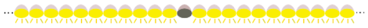
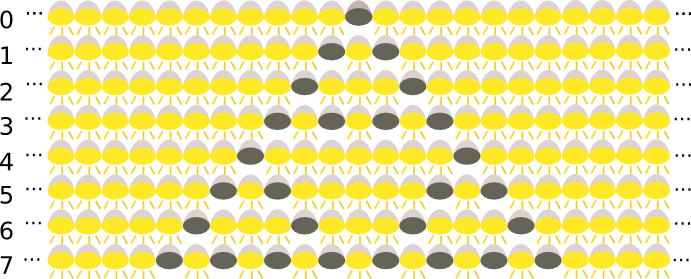

LEDのライトが横に並んでいます。ボタンを押すと，それぞれのLEDは次の表に書かれたルールで点灯したり消えたりします。
| LEDが消えていれば | LEDは点灯する |
| LEDが点灯していて，両方の隣も点灯していれば | LEDは点灯したまま |
| LEDが点灯していて，両方の隣が消えていれば | LEDは点灯したまま |
| それ以外の場合は | LEDは消える |
毎朝，ボタンを押す前は，1個を除きすべてのLEDが点灯している状態に戻ります。

:LED が点灯していることを表しています。
:LED が消えていることを表しています。
7回ボタンが押された後は，LEDはどのような状態になっているでしょうか？
